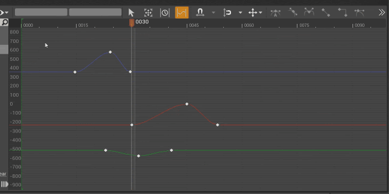
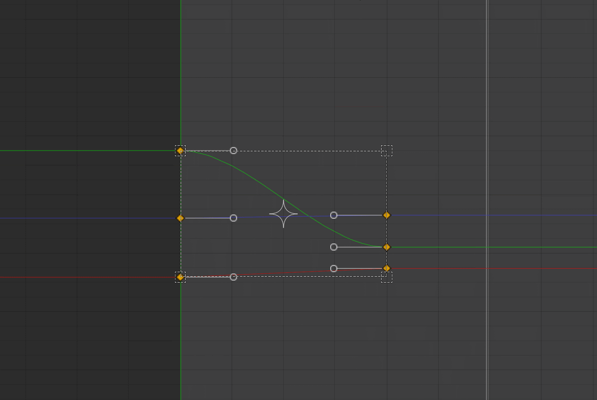
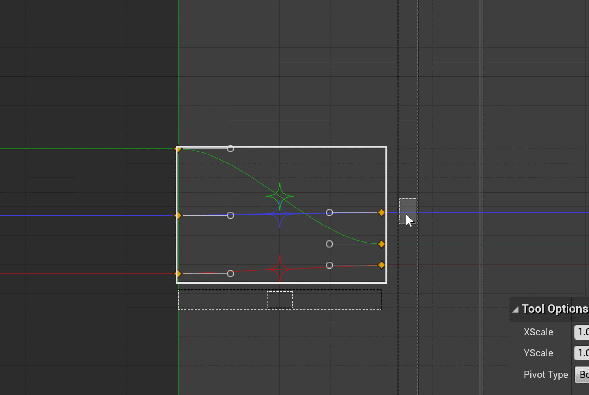
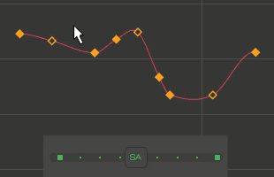
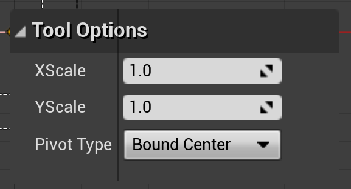
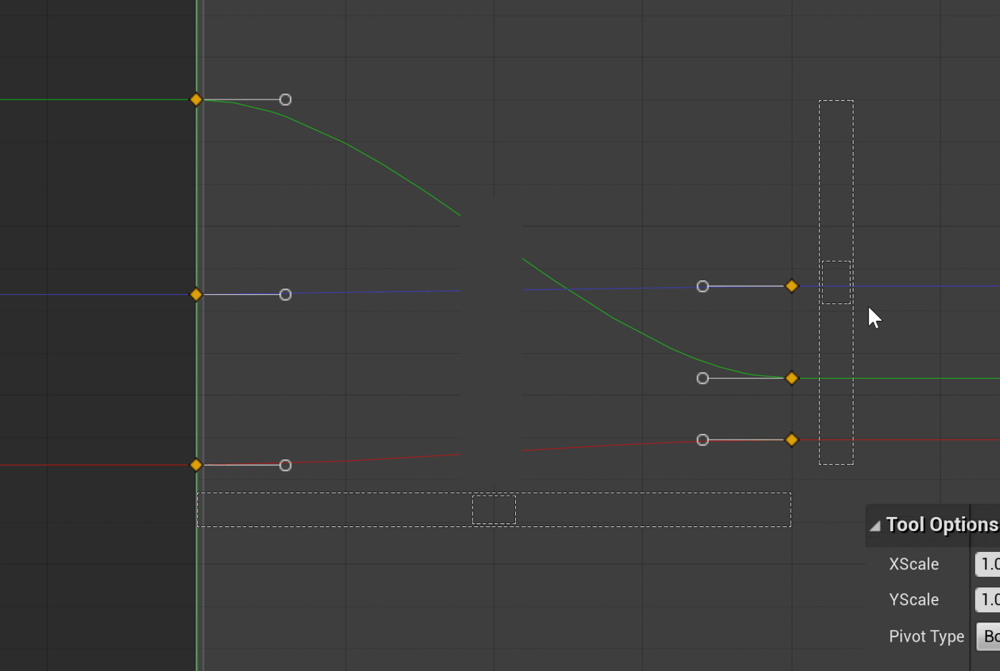
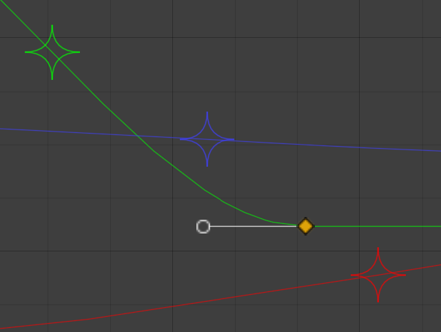

Multi Scale Tool
Preface: this was written as a part of my COGS 121 class in Spring quarter 2020.
Background
As an intern at Epic Games last summer, I had the opportunity to work with a variety of artists and programmers to make various additions to the company’s cinematics tools.
For those unfamiliar, Epic Games develops a software called Unreal Engine. Unreal contains tools for several aspects of the game development pipeline, from level creation to animation to game scripting.
I worked with a team that developed the toolset used to create scripted sequences for cutscenes, trailers, and short films.
One of the tools I worked on in the engine was the curve editor. To better understand the function of a curve editor, It’s important to first understand the function of curves in a sequence.
In a sequence, the values of arbitrary object properties can be set to change over time. For example, an object’s position could change along the x axis over time, or a light’s brightness could increase or flicker over time.
The curve editor allows artists to specify how these values should change over time by manipulating the curves (defined by “key” points) the values follow. Here’s a gif of it in action:

In this example, a curve is controlling the camera’s focus distance
This write-up covers the development of the curve editor’s multi select tool, a tool used to scale multiple curves at a time from a scale origin (or “pivot”) unique to each curve. A gif of it can be seen below:

The multi select tool scales curves from curve-specific pivots, visualized by the colored diamond icons
This write up will be slightly atypical and messy, as I wasn’t too well versed in the design process at the time and Epic’s workflow wasn’t much like the design workflow used in classes like COGS 120.
I didn’t have a list of all the features the tool needed at first, it took a few iterations to create a tool with everything the artists needed.
I also don’t have access to any of the gifs I sent when developing it or the specific feedback I got since I am not currently with the company.
The Initial Problem
One of the major tasks during my internship was renovating the (relatively new) curve editor’s existing tools to more closely match the feature set found in the curve editors of industry-standard 3D modeling software.
Early on in this process, my team and I met with the artists to discuss the changes I had made so far and potential next steps.
One of the artists suggested that the editor’s existing curve transformation tool (seen below) should have the ability to scale each curve from its own center.
As it was demoed, the tool only allowed curves to be scaled uniformly together from the selection center (among other scale points):

Using the existing transform tool, the selection could be scaled from the center in each direction by dragging a handle and holding alt (ignore the icon in the center, it was added by me later during my internship)
When working down my list of features to implement in the curve editor after the meeting, I decided to allow users to scale curves from their unique centers by having them drag a selection outline handle with the Control key down.
There was already altered functionality for scaling from the center with the alt key held, so I figured doing this wouldn’t be a huge stretch to users. Here’s an approximation of what it looked like:

A mockup of what the transform tool looked like after my changes (imagine the mouse is dragging on the selection outline and the pivot icons aren’t there)
I found a number of problems with the tool:
- Discoverability: how would users know to press Control?
- Intuitivity: while it was intuitive (without unique scaling) to pull a handle and see all the curves follow, it was not intuitive with unique scaling to pull a handle and see all the curves scale on their own by different amounts.
- Feature cramp: artists wanted more control over scaling, both uniquely and all-together.
- I was also in the process of adding the ability to hold shift and move a pivot icon around for precise pivot placement for scaling curves together
- On top of this, artists added a few days after the meeting that they also wanted the ability to scale curves uniquely from the leftmost and rightmost selected key of each curve, not just the center.
After showing my progress to one of the artists, we both felt the tool needed to be changed. I suggested the idea of creating a separate tool for scaling from unique pivots, and he agreed that it would be a good idea.
I ran the idea through a few of my co-workers and they agreed as well.
Iteration 2
While brainstorming what the design for the new tool should look like, my co-workers referred me a popular curve-editing extension for Autodesk Maya called animBot (https://animbot.ca/home/).
It allows for artists to manipulate curves in pretty much any way they can think of, including scaling from the average, default y value, or the next or last neighbor of all keys selected:

I liked how animBot used sliders to control almost all of its arbitrary and sometimes hard to visualize curve transformations, but i disliked how the range of the scale was limited by the bounds of the slider.
In the example above, the artist could only scale up to 2x. Unreal’s curve editor’s transform tool solved this by allowing the artists to scale the keys by as much as the editor’s view allowed;
in other words, if they wanted to scale their selection more they could zoom out further.
For my second implementation, I decided to have two sliders: one vertical and one horizontal, to control the scale along the y and x axis respectively.
To set the pivot type, artists could select either the first key, last key, average, or bound center from a drop down in the tool options panel.

The tool options panel allowed artists to be more precise with their scaling and gave the option to set the pivot to a few different positions
After thinking through a few variants of the slider design, I added a few details to show users how the sliders could be manipulated.
I made the slider handles fill with a slightly transparent white color when hovered over to show that the handle could be dragged, similarly to how the handles of the transform tool “glowed” when they were hovered over.
I also made the slider bounds extend to the length of the view when the mouse hovered over the handle to show the extent to which the handle could be moved.

What the tool looked like after iteration 2, almost the final product but with no pivot icons.
Iteration 3
The team liked this new design, so the tool was sent to QA to do some final testing. When QA reviewed it, they suggested adding an icon for visualizing the pivots of each curve.
For this, I decided to reuse the pointy diamond icon I had coded earlier for manually setting the pivot of the transform tool (seen above).
When creating it, I originally intended for the pivot icon to be a circle but I couldn’t get the four spline curves to mesh together right.
I instead decided to invert the curves to get the final design, which one of my co-workers called “actually not bad.”
When implementing the icon in the multi-select tool, I differentiated the different pivots by color to show the curves they applied to and increased the line thickness to 2 (from 1) to make up for any contrast issues with the different colors.

The pivot icons and their respective lines
Conclusion and Reflection
When presenting my final product, artist feedback was generally positive. One artist said he looked forward to using the tool.
If I had more time, there are a few issues I would fix. One issue I noticed with the tool was that, unlike the transform tool, you couldn’t scale from both the x and y axes at once.
Fortunately, the artists said they didn’t mind. I also noticed that the sliders wouldn’t be fully visible if part of the selection was outside of the view.
If an artist wanted to zoom in to get more accuracy when scaling and part of the selection was out of view, the sliders wouldn’t be fully visible and the artist might not be able to scale.
Scaling could be done instead by using the existing options panel at the bottom, but that might not be ideal. Unfortunately, I did not get the chance to address this before I left.
While making this, I learned a lot about designing 3D interaction tools and collaborating with artists as users.
While most of my projects during the internship had a well-defined interface before I started, this was my first time designing something that had no initial solution.
Over the course of my internship, I also learned a lot about the cinematic-related workflows artists went through and the tools artists used in the creation process.